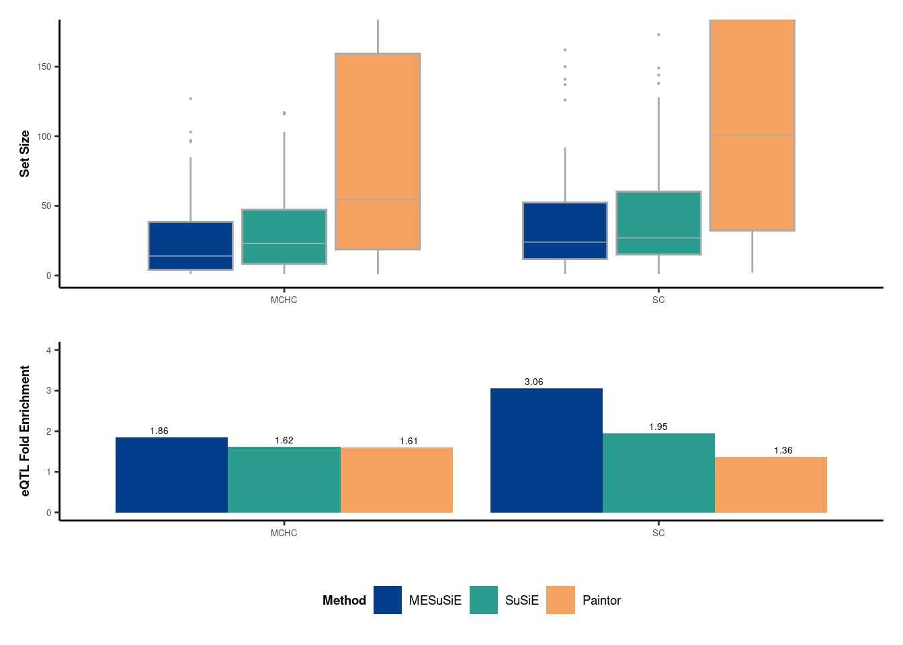
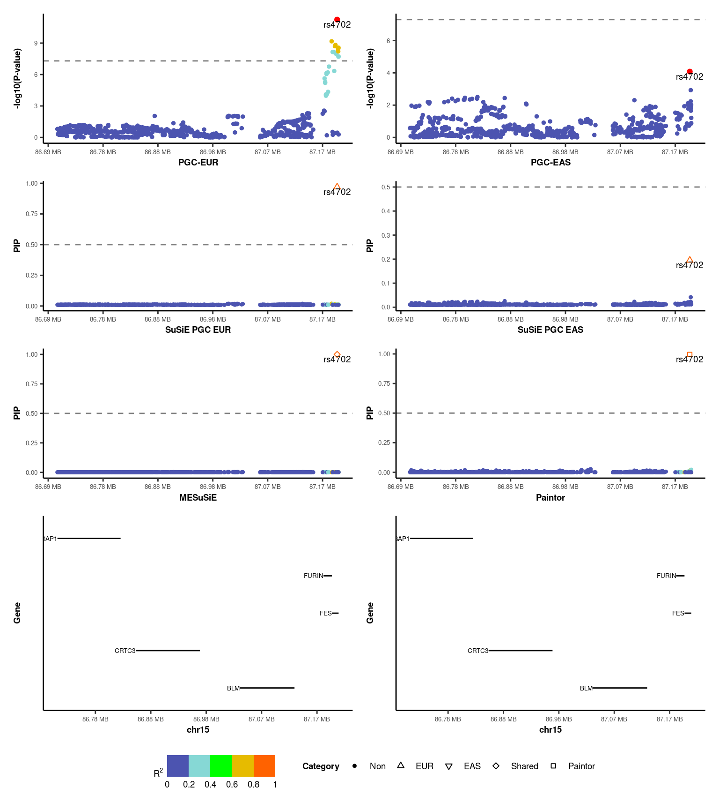
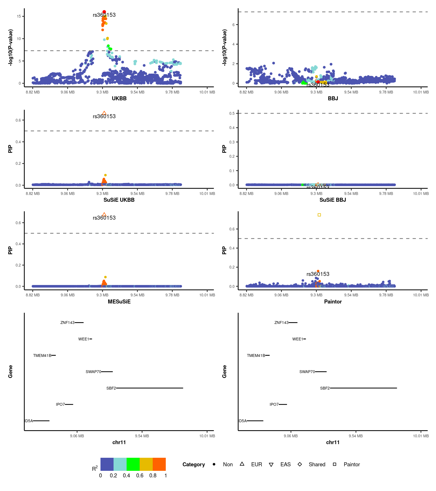

Last updated: 2023-10-11
Checks: 7 0
Knit directory: meSuSie_Analysis/
This reproducible R Markdown analysis was created with workflowr (version 1.7.0). The Checks tab describes the reproducibility checks that were applied when the results were created. The Past versions tab lists the development history.
Great! Since the R Markdown file has been committed to the Git repository, you know the exact version of the code that produced these results.
Great job! The global environment was empty. Objects defined in the global environment can affect the analysis in your R Markdown file in unknown ways. For reproduciblity it’s best to always run the code in an empty environment.
The command set.seed(20220530) was run prior to running
the code in the R Markdown file. Setting a seed ensures that any results
that rely on randomness, e.g. subsampling or permutations, are
reproducible.
Great job! Recording the operating system, R version, and package versions is critical for reproducibility.
Nice! There were no cached chunks for this analysis, so you can be confident that you successfully produced the results during this run.
Great job! Using relative paths to the files within your workflowr project makes it easier to run your code on other machines.
Great! You are using Git for version control. Tracking code development and connecting the code version to the results is critical for reproducibility.
The results in this page were generated with repository version 1f54cb8. See the Past versions tab to see a history of the changes made to the R Markdown and HTML files.
Note that you need to be careful to ensure that all relevant files for
the analysis have been committed to Git prior to generating the results
(you can use wflow_publish or
wflow_git_commit). workflowr only checks the R Markdown
file, but you know if there are other scripts or data files that it
depends on. Below is the status of the Git repository when the results
were generated:
Untracked files:
Untracked: data/GLGC_chr_22.txt
Untracked: data/MESuSiE_Example.RData
Untracked: data/UKBB_chr_22.txt
Unstaged changes:
Modified: analysis/Lipid_810.Rmd
Deleted: analysis/illustration.Rmd
Deleted: analysis/toy_example.Rmd
Note that any generated files, e.g. HTML, png, CSS, etc., are not included in this status report because it is ok for generated content to have uncommitted changes.
These are the previous versions of the repository in which changes were
made to the R Markdown (analysis/MCHC_SCZ.Rmd) and HTML
(docs/MCHC_SCZ.html) files. If you’ve configured a remote
Git repository (see ?wflow_git_remote), click on the
hyperlinks in the table below to view the files as they were in that
past version.
| File | Version | Author | Date | Message |
|---|---|---|---|---|
| Rmd | 1f54cb8 | borangao | 2023-10-11 | Update my analysis |
| html | 428bdf0 | borangao | 2023-10-09 | Build site. |
| Rmd | ba8db56 | borangao | 2023-10-09 | Update my analysis |
| html | 020e93b | borangao | 2023-10-09 | Build site. |
| Rmd | 90814d2 | borangao | 2023-10-09 | Update yml |
| html | 504f3a9 | borangao | 2023-10-09 | Build site. |
| Rmd | 62ce4b3 | borangao | 2023-10-09 | Update my analysis |
Note: all the code and analysis reproduced here can be found in Repository
In addition to lipid traits of European and African ancestry, we further did analysis in MCHC and SCZ in European and East Asian ancestry.
library(ggpubr)
library(data.table)
library(dplyr)
library(tidyr)
library(ggplot2)
library(patchwork)
library(ggpmisc)
library(VennDiagram)
library(gridExtra)
library(ggbreak)
library(DescTools)
library(coin)
library(susieR)
library(ggrepel)
library(stringr)
load("/net/fantasia/home/borang/Susie_Mult/Revision_Round_1/01_08_Real_Data/summary_res/res.RData")
custom_theme <- function() {
theme(
axis.text.x = element_text(size = 5),
axis.text.y = element_text(size = 5),
axis.title.x = element_text(size = 7, face="bold"),
axis.title.y = element_text(size = 7, face="bold"),
strip.text.x = element_text(size = 5),
strip.text.y = element_text(size = 5),
strip.background = element_blank(),
legend.text = element_text(size=7),
legend.title = element_text(size=7, face="bold"),
plot.title = element_text(size=7, hjust = 0.5),
panel.grid.major = element_blank(),
panel.grid.minor = element_blank(),
panel.border = element_blank(),
axis.line = element_line(color = "black")
)
}
################################################
#
# Set Size/Z-score/eQTL
#
#
###############################################
################################################
#
# Set SiZe Part
#
###############################################
###Median set size by Trait
all_sets_info<-data.frame(res_all%>%group_by(Trait,Region) %>% summarise(across(c("MESuSiE_cs", "SuSiE_cs","Paintor_cs"), ~ sum(.x, na.rm = TRUE))))%>%filter(MESuSiE_cs!=0, SuSiE_cs!=0, Paintor_cs!=0) ###Median Set Size across all locus
all_sets_info_long<-all_sets_info%>%pivot_longer(!(Trait|Region), names_to = "Method", values_to = "Count")
all_sets_info_long$Method<-factor(all_sets_info_long$Method,levels=c("MESuSiE_cs","SuSiE_cs","Paintor_cs"))
levels(all_sets_info_long$Method)<-c("MESuSiE","SuSiE","Paintor")
p_set = ggplot(data =all_sets_info_long,aes(x = Trait, y=Count,fill=Method))+geom_boxplot(aes(x = Trait,fill=Method),outlier.size = 0.1,fatten = 0.5,color = "darkgray")+scale_fill_manual(values=c("MESuSiE"="#023e8a","SuSiE"="#2a9d8f","Paintor"="#f4a261"),guide=FALSE)
p_set =p_set + theme_bw() + xlab("") +ylab("Set Size")+coord_cartesian(ylim=c(0,175))
p_set= p_set+custom_theme()
################################################
#
# Z-score Part
#
###############################################
MESuSiE_cs_Z<-res_all%>%group_by(Trait) %>%filter(MESuSiE_cs==1)%>%summarise(zmax = median(pmax(abs(zscore_EUR),abs(zscore_EAS))))
SuSiE_cs_Z<-res_all%>%group_by(Trait) %>%filter(SuSiE_cs==1)%>%summarise(zmax =median(pmax(abs(zscore_EUR),abs(zscore_EAS))))%>%pull(zmax)
Paintor_cs_Z<-res_all%>%group_by(Trait) %>%filter(Paintor_cs==1)%>%summarise(zmax = median(pmax(abs(zscore_EUR),abs(zscore_EAS))))%>%pull(zmax)
set_size_z_info<-data.frame(cbind(MESuSiE_cs_Z,SuSiE_cs_Z,Paintor_cs_Z))
colnames(set_size_z_info)<-c("Trait",c("MESuSiE","SuSiE","Paintor"))
set_size_z_info_long<-set_size_z_info %>%pivot_longer(!(Trait), names_to = "Method", values_to = "Z")%>%mutate(Method = factor(Method, levels=c("MESuSiE","SuSiE","Paintor")))
p_z = ggplot(data = set_size_z_info_long,aes(x = Trait, y=Z,fill=Method))+geom_bar( stat = "identity",position="dodge")+scale_fill_manual(values=c("MESuSiE"="#023e8a","SuSiE"="#2a9d8f","Paintor"="#f4a261"))
p_z = p_z + geom_text(label = round(set_size_z_info_long$Z,2),position = position_dodge(width = 1),vjust=-0.5,size = 5*5/14)
p_z = p_z + theme_bw() + xlab("") +ylab("Median |Z|")+ ylim(0,max(round(set_size_z_info_long$Z,2)+1))
p_z = p_z +custom_theme()
################################################
#
# eQTL enrichment
#
#
###############################################
res_all<-res_all%>%mutate(utr_comb = ifelse((utr_3+utr_5)>0,1,0))
ann_col_name<-c("missense", "synonymous", "utr_comb", "promotor", "CRE","blood_ind_eQTL","brain_ind_eQTL")
# Functions for calculating fold enrichment
calc_fold_enrichment <- function(df, cs_col, ann_col_name) {
df %>%
group_by(Region) %>%
filter(sum(!!sym(cs_col)) != 0) %>%
group_by(Trait, !!sym(cs_col)) %>%
summarise(across(ann_col_name, ~ sum(.x, na.rm = TRUE) / n())) %>%
group_by(Trait) %>%
summarise(across(ann_col_name, ~ .x[!!sym(cs_col) == 1] / .x[!!sym(cs_col) == 0]))
}
MESuSiE_PIP_ann <- calc_fold_enrichment(res_all, "MESuSiE_cs", ann_col_name)
SuSiE_PIP_ann <- calc_fold_enrichment(res_all, "SuSiE_cs", ann_col_name)
Paintor_PIP_ann <- calc_fold_enrichment(res_all, "Paintor_cs", ann_col_name)
# Combine results
Trait_CS_enrichment <- bind_rows(
MESuSiE_PIP_ann %>% mutate(Method = "MESuSiE"),
SuSiE_PIP_ann %>% mutate(Method = "SuSiE"),
Paintor_PIP_ann %>% mutate(Method = "Paintor")
) %>% mutate(Method = factor(Method, levels = c("MESuSiE", "SuSiE", "Paintor")))%>%
dplyr::select(Trait,blood_ind_eQTL,brain_ind_eQTL ,Method )
# Pivot to long format
Trait_CS_enrichment_long <- Trait_CS_enrichment %>%
pivot_longer(cols = -c(Method, Trait), names_to = "Cat", values_to = "Prop") %>%
mutate(Method = factor(Method, levels = c("MESuSiE", "SuSiE", "Paintor")))
Trait_CS_enrichment_long<-Trait_CS_enrichment_long%>%filter((Trait=="MCHC"&Cat=="blood_ind_eQTL")|(Trait=="SC"&Cat=="brain_ind_eQTL"))%>%mutate(Cat ="eQTL")
p_eQTL <- ggplot(Trait_CS_enrichment_long, aes(x = Trait, y = Prop, fill = Method)) +
geom_bar(stat = "identity", position = "dodge") +scale_fill_manual(values = c("MESuSiE" = "#023e8a", "SuSiE" = "#2a9d8f", "Paintor" = "#f4a261")) +
geom_text(,label = round(Trait_CS_enrichment_long$Prop,2),position = position_dodge(width = 1),vjust=-0.5,size = 5*5/14)+
xlab("") + ylab("eQTL Fold Enrichment") + ylim(0,max(round(Trait_CS_enrichment_long$Prop))+1)+
theme_bw() + custom_theme()
p_out<-p_set/p_eQTL+plot_layout(guides = "collect",heights = c(1.5,1))&theme(legend.position = 'bottom')
p_out
| Version | Author | Date |
|---|---|---|
| 504f3a9 | borangao | 2023-10-09 |
##############################################################
#
#
# Real Data Example Plotter
#
#
################################################################
gwas_plot_fun <- function(data_plot, xlab_name, ylab_name, yintercept) {
p_manhattan = ggplot() + geom_point(data = data_plot%>%filter(Lead_SNP==0), aes(x = POS, y = PIP, color = r2), size = 1)
p_manhattan = p_manhattan + geom_point(data = data_plot%>%filter(Lead_SNP==1), aes(x = POS, y = PIP), size = 1.5, color = "red") +
geom_text(data = data_plot%>%filter(Lead_SNP==1), mapping = aes(x = POS, y = PIP, label = SNP), vjust = 1.2, size = 7/14*5, show.legend =FALSE)
p_manhattan = p_manhattan +
scale_color_stepsn(
colors = c("navy", "lightskyblue", "green", "orange", "red"),
breaks = seq(0.2, 0.8, by = 0.2),
limits = c(0, 1),
show.limits = TRUE,
na.value = 'grey50',
name = expression(R^2)
)
p_manhattan = p_manhattan +
geom_hline(
yintercept = yintercept,
linetype = "dashed",
color = "grey50",
size = 0.5
)
p_manhattan = p_manhattan +
geom_vline(
xintercept = data_plot%>%filter(lead_SNP==1)%>%pull(POS),
linetype = "dashed",
color = "grey50",
size = 0.5
)
p_manhattan = p_manhattan + xlim(min(data_plot$POS),max(data_plot$POS))
p_manhattan = p_manhattan + expand_limits(x = round(max(data_plot$POS)/(1024^2))*(1024^2))
if(max(data_plot$POS>(1024^2))){
p_manhattan = p_manhattan + scale_x_continuous(labels = function(x) paste0( round(x / (1024^2),2), " MB"))
}
if(max(data_plot$POS<(1024^2))){
p_manhattan = p_manhattan + scale_x_continuous(labels = function(x) paste0(round(x / 1e3,2), " KB"))
}
p_manhattan = p_manhattan + xlab(xlab_name) +ylab(ylab_name)
p_manhattan = p_manhattan + guides(fill = guide_legend(title = as.expression(bquote(R^2))))
p_manhattan = p_manhattan + theme_bw()+custom_theme()
return(p_manhattan)
}
###Function used for PIP plot
finemap_plot_fun<-function(data_plot,xlab_name,ylab_name,yintercept){
p_manhattan = ggplot() + geom_point(data = data_plot, aes(x = POS, y = PIP, color = r2,shape = cat))+scale_shape_manual(name="Category",drop=FALSE,values=c(20,24,25,23,22))
p_manhattan = p_manhattan + geom_text(data =data_plot%>%filter(Lead_SNP==1), mapping=aes(x=POS, y=PIP, label=SNP),vjust=1.2, size= 7/14*5,show.legend = FALSE)
p_manhattan = p_manhattan + theme_bw()+scale_color_stepsn(
colors = c("navy", "lightskyblue", "green", "orange", "red"),
breaks = seq(0.2, 0.8, by = 0.2),
limits = c(0, 1),
show.limits = TRUE,
na.value = 'grey50',
name = expression(R^2)
)
p_manhattan = p_manhattan + geom_hline(
yintercept =yintercept,
linetype = "dashed",
color = "grey50",
size = 0.5
) + geom_vline(
xintercept = data_plot%>%filter(lead_SNP==1)%>%pull(POS),
linetype = "dashed",
color = "grey50",
size = 0.5
)
p_manhattan = p_manhattan + xlim(min(data_plot$POS),max(data_plot$POS))
p_manhattan = p_manhattan + expand_limits(x = round(max(data_plot$POS)/(1024^2))*(1024^2))
if(max(data_plot$POS>(1024^2))){
p_manhattan = p_manhattan + scale_x_continuous(labels = function(x) paste0(round(x / (1024^2),2), " MB"))
}
if(max(data_plot$POS<(1024^2))){
p_manhattan = p_manhattan + scale_x_continuous(labels = function(x) paste0(round(x / 1e3,2), " KB"))
}
p_manhattan= p_manhattan+xlab(xlab_name)+ylab(ylab_name)
p_manhattan= p_manhattan+guides(fill=guide_legend(title=as.expression(bquote(R^2))))
p_manhattan = p_manhattan + theme_bw()+custom_theme()
return(p_manhattan)
}
# Function used for gene plot
gene_range_plot_fun<-function(gene_list_data,plot.range){
p<-ggplot(data = gene_list_data) +
geom_linerange(aes(x = Gene, ymin = Start, ymax = End))+ylim(plot.range)+ expand_limits(y = round(max(plot.range[2])/(1024^2))*(1024^2))+scale_y_continuous(labels = function(y) paste0(round(y / (1024^2),2), " MB"))+coord_flip()+
geom_text(aes(x = Gene, y = Start, label = Gene), hjust = "right", size = 5/14*5) + ylab(paste0("chr",unique(gsub("chr","",gene_list_data$Chrom))))+ xlab("Gene") +
theme_bw() + theme(
axis.text.x = element_text(size = 5),
axis.text.y = element_blank(),
axis.ticks.y = element_blank(),
axis.title.x = element_text(size = 7, face="bold"),
axis.title.y = element_text(size = 7, face="bold"),
strip.text.x = element_text(size = 5),
strip.text.y = element_text(size = 5),
strip.background = element_blank(),
legend.text = element_text(size=7),
legend.title = element_text(size=7, face="bold"),
plot.title = element_text(size=7, hjust = 0.5),
panel.grid.major = element_blank(),
panel.grid.minor = element_blank(),
panel.border = element_blank(),
axis.line.x = element_line(color = "black"),
axis.line.y = element_line(color = "black")
)
return(p)
}
#####################################################################################################################
#
#
#
# Example showcase
#
#
#
#####################################################################################################################
Gene_List<-fread("/net/fantasia/home/borang/Susie_Mult/simulation/simu_0120/data/Gencode_GRCh37_Genes_UniqueList2021.txt",header=T)
###################################################################
#
#
# SCZ example (rs4702 of FURIN)
#
#
##################################################################
region = 120
trait_name = "SC"
res_z_dir<-paste0("/net/fantasia/home/borang/Susie_Mult/Revision_Round_1/01_08_Real_Data/",trait_name,"/",trait_name,"/")
out_dir<-paste0(res_z_dir,"data/")
out_res_dir<-paste0(res_z_dir,"res/")
##Data Reprocess
EUR_COV<-as.matrix(fread(paste0(out_dir,"Region_",region,".LD1")))
EAS_COV<-as.matrix(fread(paste0(out_dir,"Region_",region,".LD2")))
candidate_region<-res_all%>%filter(Region==region)
# rs4702 is the 3'utr of FURIN gene, highlighted in the paper
lead_SNP = "rs4702"
lead_SNP_index<-which(candidate_region$SNP==lead_SNP)
candidate_region<-candidate_region%>%mutate(r2_EUR = unname(unlist((EUR_COV[,lead_SNP_index])^2)) ,r2_EAS = unname(unlist((EAS_COV[,lead_SNP_index])^2)),POS = as.numeric(POS))
####Category Setting
candidate_region<-candidate_region%>%mutate(SuSiE_cat = case_when(susie_EUR>0.5&susie_EAS>0.5 ~ 3,
susie_EUR>0.5&susie_EAS<0.5 ~ 1,
susie_EUR<0.5&susie_EAS>0.5 ~ 2,
TRUE ~ 0),
Paintor_cat = case_when(Paintor_PIP>0.5~4,
TRUE~0),
MESuSiE_cat = case_when(MESuSiE_PIP_WB>0.5~1,
MESuSiE_PIP_BB>0.5~2,
MESuSiE_PIP_Shared>0.5~3,
TRUE~0))
###GWAS PLOT
EUR_GWAS_plot_data<-candidate_region%>%mutate(r2 = r2_EUR,PIP = -log10(2*pnorm(-abs(zscore_EUR))),Lead_SNP = ifelse(SNP==lead_SNP,1,0),POS= as.numeric(POS))%>%select(SNP,POS, r2,PIP,Lead_SNP)
EAS_GWAS_plot_data<-candidate_region%>%mutate(r2 = r2_EAS,PIP = -log10(2*pnorm(-abs(zscore_EAS))),Lead_SNP = ifelse(SNP==lead_SNP,1,0),POS= as.numeric(POS))%>%select(SNP,POS, r2,PIP,Lead_SNP)
p_EUR<-gwas_plot_fun (EUR_GWAS_plot_data, "PGC-EUR", "-log10(P-value)", -log10(5e-8))
p_EAS<-gwas_plot_fun (EAS_GWAS_plot_data, "PGC-EAS", "-log10(P-value)", -log10(5e-8))
###Finemap Plot
EUR_SuSiE_plot_data<-candidate_region%>%mutate(r2 = r2_EUR,PIP = susie_EUR,Lead_SNP = ifelse(SNP==lead_SNP,1,0),POS= as.numeric(POS),cat = factor(SuSiE_cat,levels = c("0", "1", "2", "3", "4"), labels = c("Non", "EUR", "EAS", "Shared", "Paintor")))%>%select(SNP,POS, r2,PIP,Lead_SNP,cat)
EAS_SuSiE_plot_data<-candidate_region%>%mutate(r2 = r2_EAS,PIP = susie_EAS,Lead_SNP = ifelse(SNP==lead_SNP,1,0),POS= as.numeric(POS),cat = factor(SuSiE_cat,levels = c("0", "1", "2", "3", "4"), labels = c("Non", "EUR", "EAS", "Shared", "Paintor")))%>%select(SNP,POS, r2,PIP,Lead_SNP,cat)
MESuSiE_plot_data<-candidate_region%>%mutate(r2 = r2_EUR,PIP = MESuSiE_PIP_Either,Lead_SNP = ifelse(SNP==lead_SNP,1,0),POS= as.numeric(POS),cat = factor(MESuSiE_cat,levels = c("0", "1", "2", "3", "4"), labels = c("Non", "EUR", "EAS", "Shared", "Paintor")))%>%select(SNP,POS, r2,PIP,Lead_SNP,cat)
Paintor_plot_data<-candidate_region%>%mutate(r2 = r2_EUR,PIP = Paintor_PIP,Lead_SNP = ifelse(SNP==lead_SNP,1,0),POS= as.numeric(POS),cat = factor(Paintor_cat,levels = c("0", "1", "2", "3", "4"), labels = c("Non", "EUR", "EAS", "Shared", "Paintor")))%>%select(SNP,POS, r2,PIP,Lead_SNP,cat)
p_EUR_SuSiE<-finemap_plot_fun(EUR_SuSiE_plot_data, "SuSiE PGC EUR", "PIP", 0.5)
p_EAS_SuSiE<-finemap_plot_fun(EAS_SuSiE_plot_data, "SuSiE PGC EAS", "PIP", 0.5)
p_MESuSiE<-finemap_plot_fun(MESuSiE_plot_data, "MESuSiE", "PIP", 0.5)
p_Paintor<-finemap_plot_fun(Paintor_plot_data, "Paintor", "PIP", 0.5)
# Gene Plot
plot.range <- c(min(candidate_region$POS), max(candidate_region$POS))
Gene_List_sub_coding<-Gene_List%>%filter(Chrom==paste0("chr",unique(candidate_region$CHR)))%>%filter(Start<max(candidate_region$POS),End>min(candidate_region$POS))%>%filter(Coding=="proteincoding")%>%filter(!is.na(cdsLength))
p2<-gene_range_plot_fun(Gene_List_sub_coding,plot.range)
##Combine Plot together
combined_plot<-(p_EUR/p_EUR_SuSiE/p_MESuSiE/p2+plot_layout(heights = c(1,1,1,1.5))|p_EAS/p_EAS_SuSiE/p_Paintor/p2+plot_layout(heights = c(1,1,1,1.5)))+plot_layout(guides = 'collect')&theme(legend.position = "bottom")
combined_plot
| Version | Author | Date |
|---|---|---|
| 504f3a9 | borangao | 2023-10-09 |
##############################################################
#
#
# MCHC example rs360153 SWAP70
#
################################################################
region = 18
trait_name = "MCHC"
res_z_dir<-paste0("/net/fantasia/home/borang/Susie_Mult/Revision_Round_1/01_08_Real_Data/",trait_name,"/",trait_name,"/")
out_dir<-paste0(res_z_dir,"data/")
out_res_dir<-paste0(res_z_dir,"res/")
##Data Reprocess
EUR_COV<-as.matrix(fread(paste0(out_dir,"Region_",region,".LD1")))
EAS_COV<-as.matrix(fread(paste0(out_dir,"Region_",region,".LD2")))
candidate_region<-res_all%>%filter(Region==region)
lead_SNP = "rs360153"
lead_SNP_index<-which(candidate_region$SNP==lead_SNP)
candidate_region<-candidate_region%>%mutate(r2_EUR = unname(unlist((EUR_COV[,lead_SNP_index])^2)) ,r2_EAS = unname(unlist((EAS_COV[,lead_SNP_index])^2)),POS = as.numeric(POS))
####Category Setting
candidate_region<-candidate_region%>%mutate(SuSiE_cat = case_when(susie_EUR>0.5&susie_EAS>0.5 ~ 3,
susie_EUR>0.5&susie_EAS<0.5 ~ 1,
susie_EUR<0.5&susie_EAS>0.5 ~ 2,
TRUE ~ 0),
Paintor_cat = case_when(Paintor_PIP>0.5~4,
TRUE~0),
MESuSiE_cat = case_when(MESuSiE_PIP_WB>0.5~1,
MESuSiE_PIP_BB>0.5~2,
MESuSiE_PIP_Shared>0.5~3,
TRUE~0))
###GWAS PLOT
EUR_GWAS_plot_data<-candidate_region%>%mutate(r2 = r2_EUR,PIP = -log10(2*pnorm(-abs(zscore_EUR))),Lead_SNP = ifelse(SNP==lead_SNP,1,0),POS= as.numeric(POS))%>%select(SNP,POS, r2,PIP,Lead_SNP)
EAS_GWAS_plot_data<-candidate_region%>%mutate(r2 = r2_EAS,PIP = -log10(2*pnorm(-abs(zscore_EAS))),Lead_SNP = ifelse(SNP==lead_SNP,1,0),POS= as.numeric(POS))%>%select(SNP,POS, r2,PIP,Lead_SNP)
p_EUR<-gwas_plot_fun (EUR_GWAS_plot_data, "UKBB", "-log10(P-value)", -log10(5e-8))
p_EAS<-gwas_plot_fun (EAS_GWAS_plot_data, "BBJ", "-log10(P-value)", -log10(5e-8))
###Finemap Plot
EUR_SuSiE_plot_data<-candidate_region%>%mutate(r2 = r2_EUR,PIP = susie_EUR,Lead_SNP = ifelse(SNP==lead_SNP,1,0),POS= as.numeric(POS),cat = factor(SuSiE_cat,levels = c("0", "1", "2", "3", "4"), labels = c("Non", "EUR", "EAS", "Shared", "Paintor")))%>%select(SNP,POS, r2,PIP,Lead_SNP,cat)
EAS_SuSiE_plot_data<-candidate_region%>%mutate(r2 = r2_EAS,PIP = susie_EAS,Lead_SNP = ifelse(SNP==lead_SNP,1,0),POS= as.numeric(POS),cat = factor(SuSiE_cat,levels = c("0", "1", "2", "3", "4"), labels = c("Non", "EUR", "EAS", "Shared", "Paintor")))%>%select(SNP,POS, r2,PIP,Lead_SNP,cat)
MESuSiE_plot_data<-candidate_region%>%mutate(r2 = r2_EUR,PIP = MESuSiE_PIP_Either,Lead_SNP = ifelse(SNP==lead_SNP,1,0),POS= as.numeric(POS),cat = factor(MESuSiE_cat,levels = c("0", "1", "2", "3", "4"), labels = c("Non", "EUR", "EAS", "Shared", "Paintor")))%>%select(SNP,POS, r2,PIP,Lead_SNP,cat)
Paintor_plot_data<-candidate_region%>%mutate(r2 = r2_EUR,PIP = Paintor_PIP,Lead_SNP = ifelse(SNP==lead_SNP,1,0),POS= as.numeric(POS),cat = factor(Paintor_cat,levels = c("0", "1", "2", "3", "4"), labels = c("Non", "EUR", "EAS", "Shared", "Paintor")))%>%select(SNP,POS, r2,PIP,Lead_SNP,cat)
p_EUR_SuSiE<-finemap_plot_fun(EUR_SuSiE_plot_data, "SuSiE UKBB", "PIP", 0.5)
p_EAS_SuSiE<-finemap_plot_fun(EAS_SuSiE_plot_data, "SuSiE BBJ", "PIP", 0.5)
p_MESuSiE<-finemap_plot_fun(MESuSiE_plot_data, "MESuSiE", "PIP", 0.5)
p_Paintor<-finemap_plot_fun(Paintor_plot_data, "Paintor", "PIP", 0.5)
# Gene Plot
plot.range <- c(min(candidate_region$POS), max(candidate_region$POS))
Gene_List_sub_coding<-Gene_List%>%filter(Chrom==paste0("chr",unique(candidate_region$CHR)))%>%filter(Start<max(candidate_region$POS),End>min(candidate_region$POS))%>%filter(Coding=="proteincoding")%>%filter(!is.na(cdsLength))
p2<-gene_range_plot_fun(Gene_List_sub_coding,plot.range)
##Combine Plot together
combined_plot<-(p_EUR/p_EUR_SuSiE/p_MESuSiE/p2+plot_layout(heights = c(1,1,1,1.5))|p_EAS/p_EAS_SuSiE/p_Paintor/p2+plot_layout(heights = c(1,1,1,1.5)))+plot_layout(guides = 'collect')&theme(legend.position = "bottom")
combined_plot
| Version | Author | Date |
|---|---|---|
| 504f3a9 | borangao | 2023-10-09 |
sessionInfo()R version 4.3.1 (2023-06-16)
Platform: x86_64-pc-linux-gnu (64-bit)
Running under: Ubuntu 20.04.6 LTS
Matrix products: default
BLAS: /usr/lib/x86_64-linux-gnu/openblas-pthread/libblas.so.3
LAPACK: /usr/lib/x86_64-linux-gnu/openblas-pthread/liblapack.so.3; LAPACK version 3.9.0
locale:
[1] LC_CTYPE=en_US.UTF-8 LC_NUMERIC=C
[3] LC_TIME=en_US.UTF-8 LC_COLLATE=en_US.UTF-8
[5] LC_MONETARY=en_US.UTF-8 LC_MESSAGES=en_US.UTF-8
[7] LC_PAPER=en_US.UTF-8 LC_NAME=C
[9] LC_ADDRESS=C LC_TELEPHONE=C
[11] LC_MEASUREMENT=en_US.UTF-8 LC_IDENTIFICATION=C
time zone: America/New_York
tzcode source: system (glibc)
attached base packages:
[1] grid stats graphics grDevices utils datasets methods
[8] base
other attached packages:
[1] stringr_1.5.0 ggrepel_0.9.1 susieR_0.11.84
[4] coin_1.4-2 survival_3.3-1 DescTools_0.99.45
[7] ggbreak_0.1.1 gridExtra_2.3 VennDiagram_1.7.3
[10] futile.logger_1.4.3 ggpmisc_0.4.7 ggpp_0.4.4
[13] patchwork_1.1.1 tidyr_1.3.0 dplyr_1.1.2
[16] data.table_1.14.8 ggpubr_0.6.0 ggplot2_3.4.2
[19] workflowr_1.7.0
loaded via a namespace (and not attached):
[1] formatR_1.14 gld_2.6.5 sandwich_3.0-2
[4] readxl_1.4.2 rlang_1.1.1 magrittr_2.0.3
[7] git2r_0.32.0 multcomp_1.4-25 matrixStats_1.0.0
[10] e1071_1.7-13 compiler_4.3.1 getPass_0.2-2
[13] callr_3.7.3 vctrs_0.6.2 quantreg_5.95
[16] crayon_1.5.2 pkgconfig_2.0.3 fastmap_1.1.1
[19] backports_1.4.1 labeling_0.4.2 utf8_1.2.3
[22] promises_1.2.0.1 rmarkdown_2.22 ps_1.7.2
[25] MatrixModels_0.5-1 purrr_1.0.1 xfun_0.39
[28] modeltools_0.2-23 cachem_1.0.8 aplot_0.1.10
[31] jsonlite_1.8.3 highr_0.10 later_1.3.1
[34] reshape_0.8.9 irlba_2.3.5.1 broom_1.0.5
[37] parallel_4.3.1 R6_2.5.1 bslib_0.5.0
[40] stringi_1.7.12 car_3.1-2 boot_1.3-28.1
[43] jquerylib_0.1.4 cellranger_1.1.0 Rcpp_1.0.11
[46] knitr_1.39 zoo_1.8-12 httpuv_1.6.11
[49] Matrix_1.5-4.1 splines_4.3.1 tidyselect_1.2.0
[52] rstudioapi_0.14 abind_1.4-5 yaml_2.3.7
[55] codetools_0.2-19 processx_3.8.0 plyr_1.8.8
[58] lattice_0.20-45 tibble_3.2.1 withr_2.5.1
[61] evaluate_0.18 gridGraphics_0.5-1 lambda.r_1.2.4
[64] proxy_0.4-27 pillar_1.9.0 carData_3.0-5
[67] whisker_0.4.1 stats4_4.3.1 ggfun_0.0.9
[70] generics_0.1.3 rprojroot_2.0.3 munsell_0.5.0
[73] scales_1.2.1 rootSolve_1.8.2.3 class_7.3-20
[76] glue_1.6.2 lmom_2.8 tools_4.3.1
[79] SparseM_1.81 ggsignif_0.6.4 Exact_3.1
[82] fs_1.6.2 mvtnorm_1.1-3 libcoin_1.0-9
[85] colorspace_2.1-0 cli_3.6.1 futile.options_1.0.1
[88] fansi_1.0.5 expm_0.999-7 mixsqp_0.3-48
[91] gtable_0.3.1 rstatix_0.7.2 yulab.utils_0.0.4
[94] sass_0.4.6 digest_0.6.30 TH.data_1.1-2
[97] ggplotify_0.1.0 farver_2.1.1 htmltools_0.5.5
[100] lifecycle_1.0.3 httr_1.4.6 MASS_7.3-57